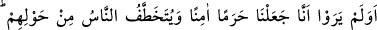
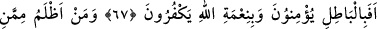
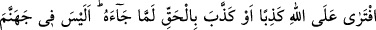
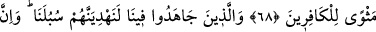
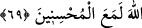
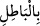
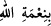

ALLAH İYİ DAVRANANLARLA
BERABERDİR
67. Çevrelerinde insanlar kapılıp götürülürken, bizim (Mekke’yi) güven içinde
kudsî bir yer yaptığımızı görmediler mi? Hâla bâtıla inanıp Allah’ın nimetine
nankörlük mü ediyorlar?
68. Allah’a karşı yalan uyduran yahut kendisine hak gelmişken onu yalan
sayandan daha zâlimi kimdir? Cehennemde kâfirlere yer mi yok!
69. Ama bizim uğrumuzda cihad edenleri elbette kendi yollarımıza eriştireceğiz.
Hiç şüphe yok ki Allah iyi davrananlarla beraberdir.
Mekke halkı “Çevrelerinde insanlar kapılıp götürülürken, bizim” onların beldesi
“(Mekke’yi)” her türlü tecavüzden ve soygundan emniyetli, halkını her türlü kötülük ve
şerlerden uzak ve “güven içinde kudsî bir yer yaptığımızı görmediler mi?
O halde apaçık ortaya çıkmışken Hakk’ı terk edip “hâla bâtıla” yâni put ve şeytana
“inanıp” şükretmeyi gerektiren “Allah’ın nimetine” O’na şirk ve ortak koşarak
“nankörlük mü ediyorlar?”
et-Te’vîlâtü’n-Necmiyye’de der ki: “
” ile “
” kelimelerinin öne alınması
(takdimi), işledikleri inkâr ve küfrün ne kadar kötü olduğunu ifâde etmek içindir. “Hâlâ
bâtıla” yâni nefsin meylettiği mâsivâya “inanıp” doğruluktan yüz mü çeviriyorlar?
“Allah’ın nimetine” yâni Hakk’ı müşâhedeye tâlip olmamak suretiyle “nankörlük mü
ediyorlar?”
Burada “bâtıl”, mâsivallah ile yâni Allah’ın dışındaki şeyler ile tefsir edilmiştir;
çünkü Allah’dan başka her şey mecâzen bâtıldır. Bâtıl olması, aslının “yokluk”
olmasından dolayıdır. Mecâzen olması ise, nisbî ve izâfî varlığa bir ayna ve tecellî yeri
oluşu sebebiyledir.
Bil ki Allah’a küfür, O’nun nimetine küfürden daha şiddetlidir. Çünkü Allah’a küfür,
O’nun nimetine küfrü de içine alır; sırf nimete küfran böyle değildir. Kafirler, Allah’a
küfür ile her iki küfrü de işledikleri için yerilmişler ve lânetlenmişlerdir.